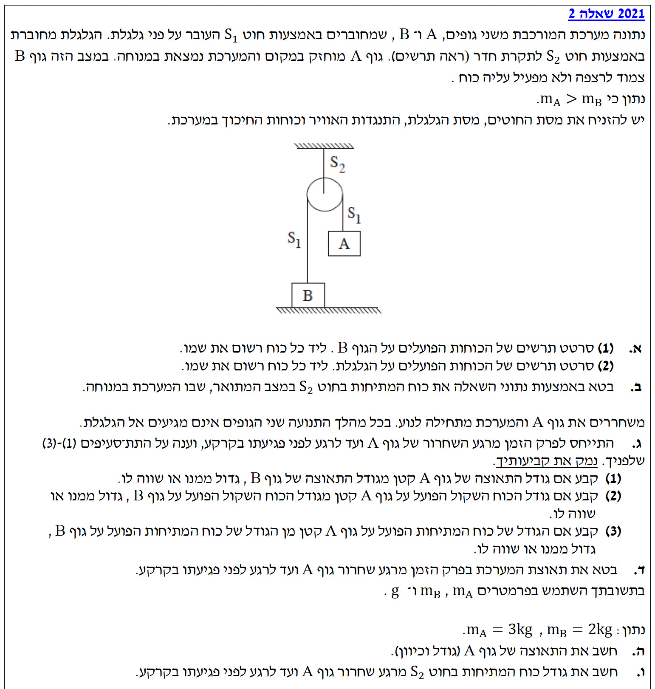
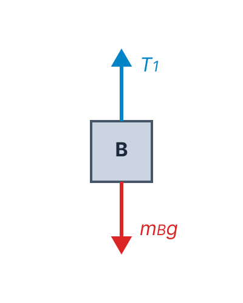
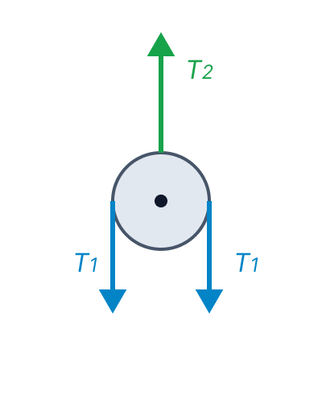

פתרון בגרות בפיזיקה
מכניקה 2021, שאלון 5 יח"ל - שאלה 2

מערכת גופים מחוברים (מכונת אטווד)
שלום תלמידים יקרים! 👋
לפנינו שאלת דינמיקה קלאסית העוסקת במערכת של שני גופים המחוברים באמצעות חוט דרך גלגלת. בשאלה זו נתרגל ניתוח כוחות מדויק במצב מנוחה (סטטיקה) ובמצב תנועה (דינמיקה). נלמד כיצד לבנות משוואות כוחות לכל גוף בנפרד, וכיצד למצוא תאוצה ומתיחות בצורה שלבית וברורה. קדימה, בואו נתחיל!
סעיף א': תרשימי כוחות (FBD)
מערכת הגופים נמצאת במצב מנוחה (המהירות והתאוצה שוות לאפס). נתון קריטי מתוך גוף השאלה: "במצב זה גוף B צמוד לרצפה ולא מפעיל עליה כוח". מכאן נובע, על פי החוק השלישי של ניוטון, שגם הרצפה לא מפעילה כוח נורמלי על גוף B. כלומר, הנורמל \( N = 0 \). כוח הכובד פועל כלפי מטה, והמתיחויות בחוטים פועלות לאורך החוטים הרלוונטיים.
לשרטט תרשים כוחות חופשי (FBD) עבור גוף B ועבור הגלגלת, כולל רישום שמות הכוחות.
תת סעיף (1) - גוף B: על גוף B פועלים שני כוחות בלבד. כוח הכובד \( m_B g \) כלפי מטה, וכוח המתיחות של החוט \( S_1 \), שנסמנו כ- \( T_1 \), כלפי מעלה. כזכור, אין כוח נורמלי.
תת סעיף (2) - הגלגלת: הגלגלת מוחזקת על ידי החוט \( S_2 \) מלמעלה (מתיחות \( T_2 \)). מהצדדים, החוט \( S_1 \) מפעיל עליה שני כוחות מתיחות כלפי מטה (משני עברי הגלגלת). נסמן כוחות אלו ב- \( T_1 \). אנו מזניחים את מסת הגלגלת ולכן אין לה כוח כובד משמעותי.
תרשים כוחות - גוף B

תרשים כוחות - גלגלת

סעיף ב': מתיחות החוט במצב מנוחה
המערכת במנוחה, ולכן התאוצה של כל רכיבי המערכת היא אפס (\( a = 0 \)). למרות שהמערכת במנוחה, מומלץ לקבוע את כיוון הציר החיובי בהתאם לכיוון שאליו תנוע המערכת אם תשוחרר. מכיוון שהגוף A כבד יותר (\(m_A > m_B\), כפי שמופיע בהמשך), גוף A צפוי לרדת וגוף B צפוי לעלות. לכן, עבור גוף B נקבע את הכיוון מעלה ככיוון החיובי, ועבור גוף A היינו קובעים את הכיוון מטה כחיובי. בחירה זו שומרת על עקביות לקראת סעיפי הדינמיקה.
לבטא את כוח המתיחות בחוט \( S_2 \) (אותו סימנו כ- \( T_2 \)) באמצעות נתוני השאלה בלבד.
נרשום את משוואות הכוחות עבור גוף B ועבור הגלגלת.
עבור גוף B (ציר חיובי מוגדר כלפי מעלה, ככיוון התנועה הצפוי):
\[ \Sigma F_y = T_1 - m_B g = 0 \] \[ T_1 = m_B g \]עבור הגלגלת (מסתה זניחה, כוחות אנכיים בלבד):
\[ \Sigma F_y = T_2 - 2T_1 = 0 \] \[ T_2 - 2T_1 = 0 \] \[ T_2 = 2T_1 \]כעת, נציב את הביטוי שמצאנו עבור \( T_1 \) לתוך המשוואה של \( T_2 \):
סעיף ג': ניתוח המערכת לאחר שחרור
כעת משחררים את גוף A. נתון כי \( m_A > m_B \). מכיוון שגוף A כבד יותר ואין כוח חיצוני שמחזיק אותו, הוא יתחיל לרדת, וגוף B יתחיל לעלות.
לקבוע ולהשוות בין גדלים פיזיקליים של גוף A וגוף B במהלך התנועה: (1) גודל התאוצה. (2) גודל הכוח השקול. (3) גודל כוח המתיחות הפועל עליהם.
תת-סעיף (1): גודל התאוצה של גוף A ביחס לתאוצת גוף B
שני הגופים מחוברים באמצעות אותו חוט אשר אורכו קבוע (חוט בלתי נמתח). לכן, על כל מטר שגוף A יורד, גוף B חייב לעלות בדיוק מטר אחד. מכאן שגודל המהירות וגודל התאוצה שלהם שווים בכל רגע נתון (\( |a_A| = |a_B| \)).
תת-סעיף (2): גודל הכוח השקול על גוף A ביחס לגוף B
על פי החוק השני של ניוטון, גודל הכוח השקול שווה למכפלת המסה בגודל התאוצה (\( \Sigma F = m \cdot a \)). בסעיף הקודם הסקנו שהתאוצות שוות בגודלן (\( a_A = a_B \)). מכיוון שנתון לנו כי המסה של A גדולה יותר (\( m_A > m_B \)), נקבל שבהכרח מכפלת המסה בתאוצה עבור גוף A תהיה גדולה יותר.
תת-סעיף (3): גודל כוח המתיחות על גוף A ביחס לגוף B
מכיוון שמדובר בחוט אידיאלי (חסר מסה) העובר דרך גלגלת אידיאלית (חסרת מסה וחיכוך), כוח המתיחות מתפשט באופן אחיד לאורך כל החוט. לכן, החוט מושך את גוף A כלפי מעלה באותו כוח בדיוק שבו הוא מושך את גוף B כלפי מעלה. כלומר \( T_A = T_B = T_1 \).
סעיף ד': ביטוי לתאוצת המערכת
המערכת משוחררת ומתחילה לנוע. נסמן את גודל התאוצה המשותפת באות \( a \). כפי שהסברנו בסעיף ב', נקבע מערכת צירים לכל גוף בנפרד, בהתאם לכיוון התנועה שלו: עבור גוף A נגדיר את הכיוון מטה כחיובי, ועבור גוף B נגדיר את הכיוון מעלה כחיובי. בצורה זו, התאוצה \( a \) תהיה בעלת סימן חיובי במשוואות של שניהם.
לפתח ביטוי עבור גודל התאוצה \( a \) באמצעות הפרמטרים \( m_A, m_B, g \).
נבנה משוואת כוחות עבור כל גוף בנפרד לאורך ציר התנועה שלו.
משוואה (1) - גוף A: תנועתו מטה (הכיוון החיובי). הכוחות הם הכובד (חיובי) והמתיחות (שלילי).
\[ m_A g - T_1 = m_A a \]משוואה (2) - גוף B: תנועתו מעלה (הכיוון החיובי). הכוחות הם המתיחות (חיובי) והכובד (שלילי).
\[ T_1 - m_B g = m_B a \]כעת, כדי להיפטר מהנעלם \( T_1 \) ולמצוא את התאוצה \( a \), נחבר את שתי המשוואות בצורה אלגברית (אגף שמאל לאגף שמאל, אגף ימין לאגף ימין):
המתיחות \( T_1 \) מצטמצמת:
נוציא גורם משותף בצד שמאל ונחלקה כדי לבודד את התאוצה \( a \):
סעיף ה': חישוב מפורש של התאוצה
ניתנים לנו ערכים מספריים: \( m_A = 3 \text{ kg} \), \( m_B = 2 \text{ kg} \). המסות נתונות כבר ביחידות תקניות (ק"ג) לכן אין צורך בהמרה. תאוצת הכובד היא \( g = 10 \text{ m/s}^2 \).
לחשב את גודל התאוצה של גוף A ואת כיוונה.
נשתמש בביטוי שפיתחנו בסעיף ד':
נציב את הערכים הנתונים לתוך המשוואה שקיבלנו:
כיוון התנועה: כיוון שגוף A הוא הגוף המאסיבי יותר, הוא ייפול מטה בזמן שגוף B עולה מעלה.
סעיף ו': מתיחות בחוט S2 בזמן התנועה
המערכת נמצאת בתנועה מואצת. גודל התאוצה של הגופים הוא \( a = 2 \text{ m/s}^2 \). הגלגלת נשארת במנוחה לאורך כל התהליך (לא זזה אנכית).
לחשב את גודל הכוח הפועל בחוט \( S_2 \) (כלומר את המתיחות \( T_2 \)) כאשר גוף A נופל.
ראשית, עלינו למצוא את המתיחות בחוט \( S_1 \) בזמן התנועה. נוכל להשתמש באחת המשוואות שבנינו בסעיף ד'. נבחר במשוואה של גוף B (כי שם המתיחות חיובית ונוח יותר לבודד אותה):
נציב את הנתונים (\( m_B = 2, g = 10, a = 2 \)):
כעת נתבונן שוב בגלגלת. מכיוון שהגלגלת מוחזקת היטב לתקרה ואינה מאיצה (נמצאת בשיווי משקל), שקול הכוחות עליה חייב להיות אפס, ממש כמו בסעיף ב':
נציב את הערך החדש של \( T_1 \) שמצאנו:
התשובה פשוטה: בזמן מנוחה, החוט היה צריך להחזיק רק את משקלו של B (20 ניוטון). אבל בזמן התנועה, החוט צריך לא רק להחזיק את B נגד כוח המשיכה, אלא גם למשוך אותו למעלה ולהאיץ אותו! כדי להאיץ גוף נגד כיוון הכובד נדרש כוח גדול יותר ממשקלו, ולכן המתיחות \( T_1 \) גדלה, ובהתאם לכך גם המתיחות \( T_2 \).